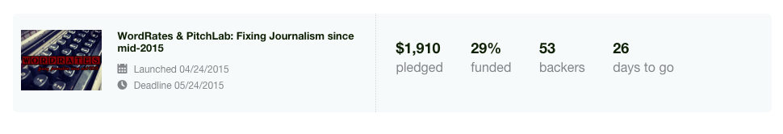

I have the audacity to believe that writers should be able to make a middle class living. I began writing about the difficulties that writers have negotiating for the value of their work amidst increasingly hostile market conditions back in January. I asked “How much are words worth?” and since then I’ve received almost a hundred emails from writers around the country who are fed up with their inability to make a living off.
This in part explains why the first three days of the Kickstarter campaign to create a new platform for writers to share market information and pitch stories have been so amazing. As of right now when I’m typing this blog post Wordrates and Pitch Lab is 29% funded!

Screen Shot 2015-04-27 at 8.49.52 AM
I’m incredibly grateful to the community of writers and journalists out there who see this as a worthwhile project, and your continuing efforts to get the word out about it. Even so, there is still a lot of work left to do to get over the finish line. We just need $4,590 more so that I can hire a web designer to start banging out the code. However, since Kickstarter is all-or-nothing funding, if I’m even one dollar short the campaign will fail and all the pledges will go unfulfilled.
So, If you haven’t pledged yet, please consider it. Even a modest donation of $25 will get you a six months of membership and access to editorial contact information and inside market data. There are a lot of other cool rewards, too. If you have already pledged there are other things you can do to help out. Fundraising campaigns like these live and die by social media so please keep tweeting and posting updates on Facebook. Post about it on Reddit (r/writing might be a good place), Digg and get your local writers groups involved.
Share this link (https://www.kickstarter.com/projects/767033302/wordrates-and-pitchlab-fixing-journalism-since-mid) and maybe one day the dream of writers making a middle class living will be one step closer to reality.